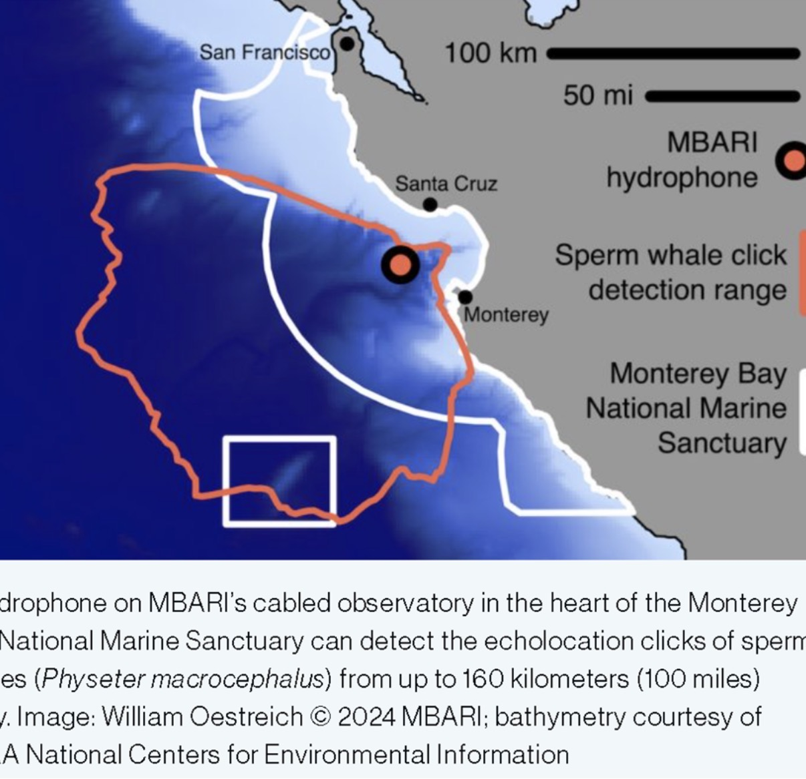
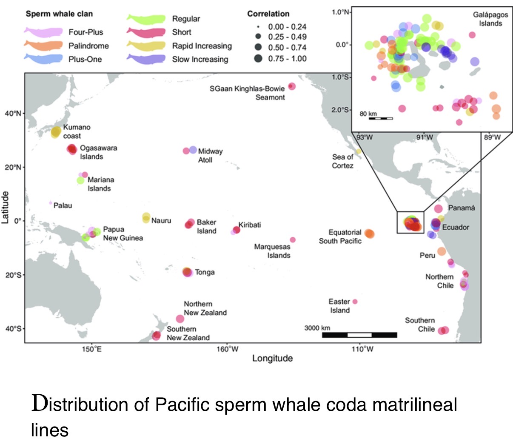
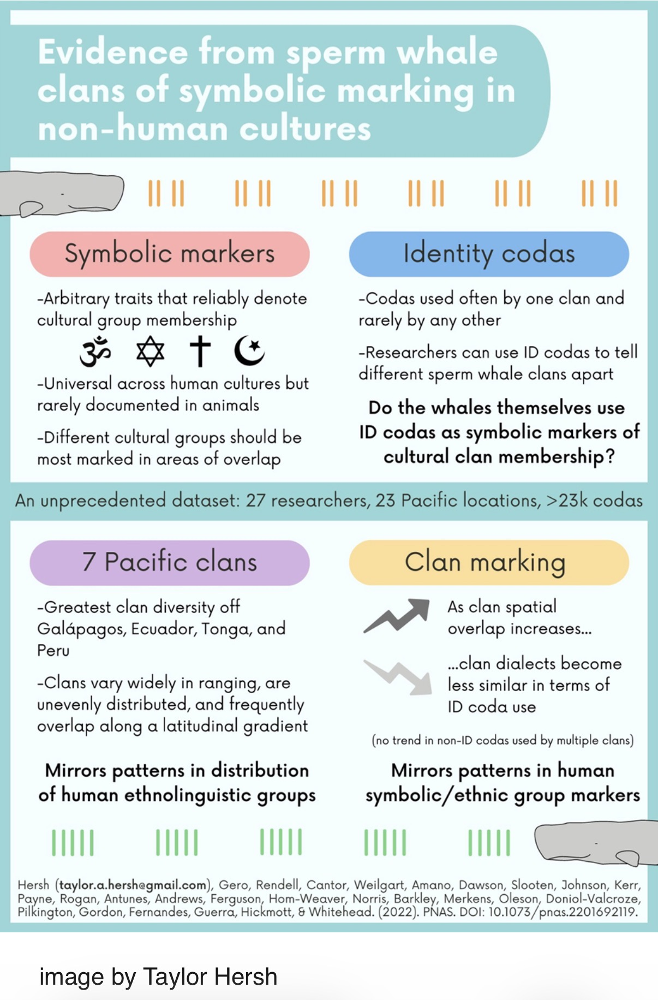
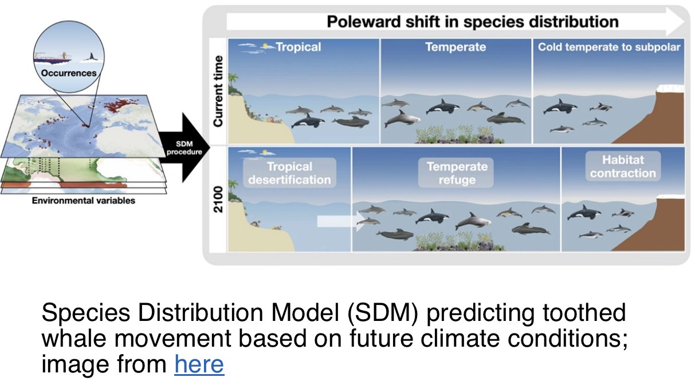

At a glance
Deep-diving toothed whales whose powerful echolocation clicks can be detected across long distances. Sperm whale groups have culturally transmitted patterns of social clicks called codas.
MBARI hydrophone and Monterey Bay
The February 11, 2026 Field Note describes seven years of passive acoustic monitoring along Central California. Different ages and sexes were detected throughout the year, with more detections in fall and winter. A detection does not mean the whale was in Monterey Bay itself: clicks can be heard up to approximately 160 km (100 miles) under favorable conditions.

Clans, codas and cultural identity
Codas are patterned sequences of clicks used in sperm whale communication. Researchers distinguish seven Pacific acoustic clans based on characteristic coda usage. The visiting group's proposed Palindrome identification was not confirmed.


Age, sex and seasonal distribution
Adult males are commonly associated with high latitudes, while female groups and calves are more often observed in tropical regions. Acoustic detections from Central California challenge any interpretation of those patterns as exclusive.
Changing oceans and future ranges
Ocean warming and changes in prey distribution could shift toothed whale ranges. These are hypotheses and model projections, not confirmed explanations for individual sightings.

Visitor-friendly takeaway
“We can sometimes hear sperm whales long before we could ever see them.” Their clicks reveal both their presence and clues to how their social groups communicate.
Source: Naturalist Shift Update, February 11, 2026. Observations and hypotheses are distinguished throughout.